Scientific color palettes: perceptually uniform colormaps for oceanography and earth sciences
Source:vignettes/scientific-palettes.Rmd
scientific-palettes.RmdThe problem with rainbow colormaps
For decades, the “rainbow” or “jet” colormap was the default choice in scientific visualization. However, research has demonstrated that rainbow colormaps are fundamentally flawed for scientific communication (Borland & Taylor (2007); Light & Bartlein (2004)):
Non-uniform perceptual lightness: The human visual system perceives brightness changes non-linearly across hues. Yellow appears much brighter than blue at equal saturation, creating artificial “bands” in continuous data.
Loss of information: Crameri et al. (2020) showed that rainbow colormaps can hide up to 7% of data features compared to perceptually uniform alternatives.
Colorblind inaccessibility: Rainbow colormaps are particularly problematic for the ~8% of males with red-green color vision deficiency (Wong (2011)).
False boundaries: Abrupt perceptual transitions (e.g., cyan-to-green) create apparent boundaries in data where none exist.
Perceptually uniform colormaps
koloRo includes scientifically validated, perceptually uniform colormaps designed for accurate data representation.
The viridis family
The viridis colormaps were developed and introduced by van der Walt & Smith (2015) and validated through perceptual studies. They maintain uniform luminance gradients and remain distinguishable under all forms of color vision deficiency.
plot_palette(c("viridis", "magma", "plasma", "inferno", "cividis"))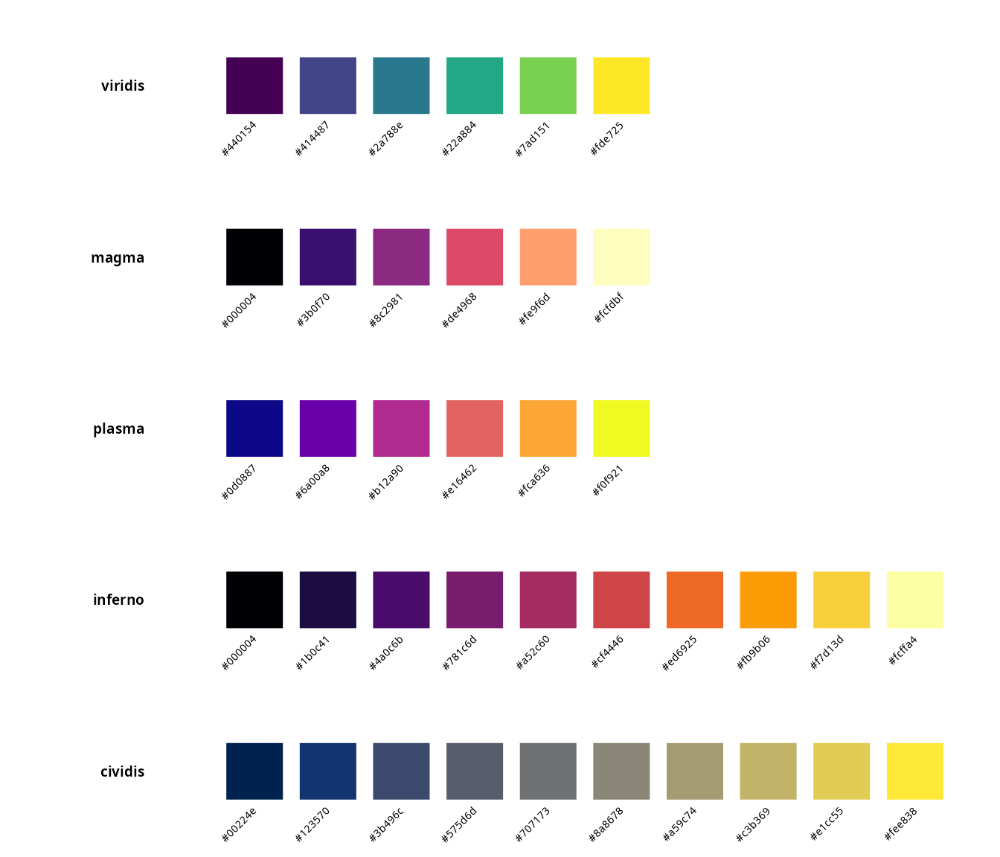
| Palette | Best for | Reference |
|---|---|---|
viridis |
General purpose sequential data | van der Walt & Smith (2015) |
magma |
Thermal/heat data, high dynamic range | van der Walt & Smith (2015) |
plasma |
Scientific visualization with yellow highlights | van der Walt & Smith (2015) |
inferno |
Fire/heat metaphors, high contrast | van der Walt & Smith (2015) |
cividis |
Optimized for deuteranopia | (Nuñez et al. (2018))(#ref-nunez2018) |
Fabio Crameri’s scientific colormaps
Developed specifically for geoscientific visualization (Crameri (2018)), Crameri’s colormaps are mathematically optimized for perceptual uniformity in CIELAB color space.
plot_palette(c("batlow", "batlowW", "batlowK", "cork", "vik", "broc"))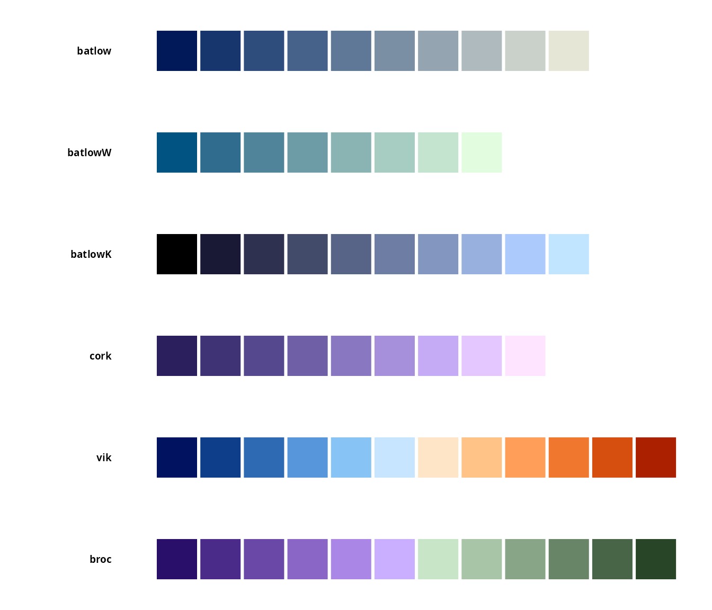
| Palette | Type | Recommended use |
|---|---|---|
batlow |
Sequential | Bathymetry, general sequential data |
batlowW |
Sequential (white end) | Data with white background emphasis |
batlowK |
Sequential (black end) | Data with dark background emphasis |
cork |
Diverging | Anomalies around zero |
vik |
Diverging | Temperature anomalies, correlation |
broc |
Diverging | Alternative diverging for land/vegetation |
Oceanographic applications
Sea surface temperature (SST)
For sea surface temperature visualization, sequential palettes with warm-to-cool transitions are most intuitive:
# Simulated SST data (realistic range: -2 to 30°C)
set.seed(42)
lon <- seq(-180, 180, length.out = 100)
lat <- seq(-90, 90, length.out = 50)
sst_grid <- expand.grid(lon = lon, lat = lat)
# Temperature decreases with latitude, with some noise
sst_grid$sst <- 28 - abs(sst_grid$lat) * 0.35 +
5 * sin(sst_grid$lon * pi / 180) * cos(sst_grid$lat * pi / 90) +
rnorm(nrow(sst_grid), sd = 1)
sst_grid$sst <- pmax(-2, pmin(32, sst_grid$sst))
ggplot(sst_grid, aes(lon, lat, fill = sst)) +
geom_raster(interpolate = TRUE) +
scale_fill_koloro_c("batlow") +
coord_fixed(expand = FALSE) +
labs(
title = "Sea surface temperature (simulated)",
subtitle = "Using batlow colormap",
x = "Longitude",
y = "Latitude",
fill = "SST (\u00B0C)"
) +
theme_minimal() +
theme(
panel.grid = element_blank(),
legend.position = "bottom",
legend.key.width = unit(2, "cm")
)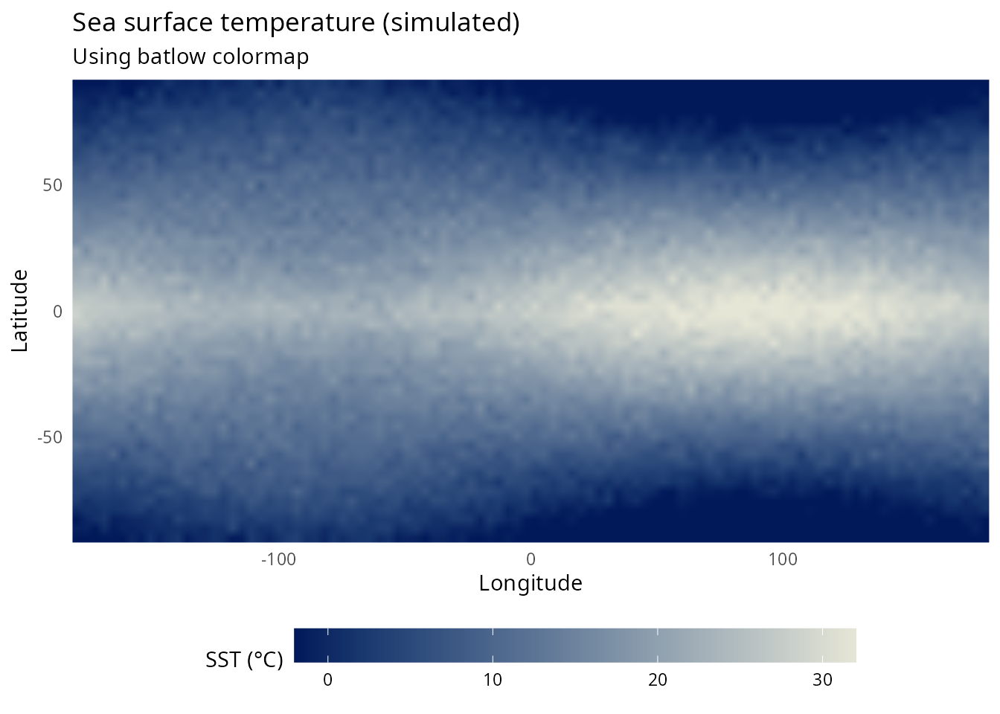
Bathymetry
Ocean depth data benefits from palettes that transition smoothly from shallow (light) to deep (dark):
# Simulated bathymetry
set.seed(123)
bathy_grid <- expand.grid(
x = seq(0, 100, length.out = 80),
y = seq(0, 60, length.out = 48)
)
# Create realistic continental shelf and deep ocean
bathy_grid$depth <- with(bathy_grid, {
shelf <- ifelse(x < 20, -50 - x * 5, -150)
slope <- ifelse(x >= 20 & x < 40, -150 - (x - 20) * 100, shelf)
deep <- ifelse(x >= 40, -2000 - 500 * sin((x - 40) * pi / 60), slope)
deep + rnorm(length(deep), sd = 100)
})
ggplot(bathy_grid, aes(x, y, fill = depth)) +
geom_raster(interpolate = TRUE) +
scale_fill_koloro_c("deep_sea", direction = -1) +
coord_fixed(expand = FALSE) +
labs(
title = "Bathymetric profile (simulated)",
subtitle = "Continental shelf to abyssal plain",
x = "Distance from coast (km)",
y = "Along-shore distance (km)",
fill = "Depth (m)"
) +
theme_minimal() +
theme(
panel.grid = element_blank(),
legend.position = "right"
)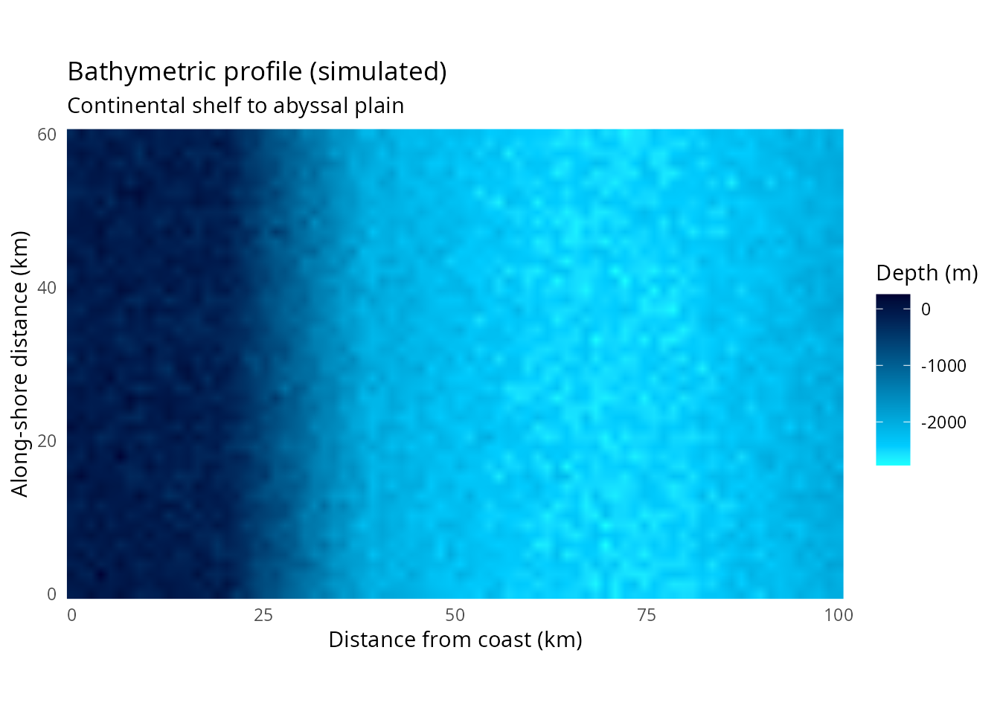
Chlorophyll-a concentration
Phytoplankton biomass (chlorophyll-a) is typically displayed on a logarithmic scale spanning several orders of magnitude:
# Simulated chlorophyll-a (typical range: 0.01 to 50 mg/m³)
set.seed(456)
chl_grid <- expand.grid(
lon = seq(-130, -115, length.out = 60),
lat = seq(30, 45, length.out = 45)
)
# Coastal upwelling pattern
chl_grid$chl <- with(chl_grid, {
coastal <- exp(-((lon + 117)^2) / 20) # Peak near coast
upwelling <- 3 * coastal * (1 + sin(lat * pi / 15))
background <- 0.1
(background + upwelling * 10) * exp(rnorm(length(lon), sd = 0.3))
})
ggplot(chl_grid, aes(lon, lat, fill = chl)) +
geom_raster(interpolate = TRUE) +
scale_fill_koloro_c("viridis", trans = "log10") +
coord_fixed(expand = FALSE) +
labs(
title = "Chlorophyll-a concentration (simulated)",
subtitle = "California Current upwelling region",
x = "Longitude",
y = "Latitude",
fill = expression(paste("Chl-", italic(a), " (mg ", m^{-3}, ")"))
) +
theme_minimal() +
theme(
panel.grid = element_blank(),
legend.position = "right"
)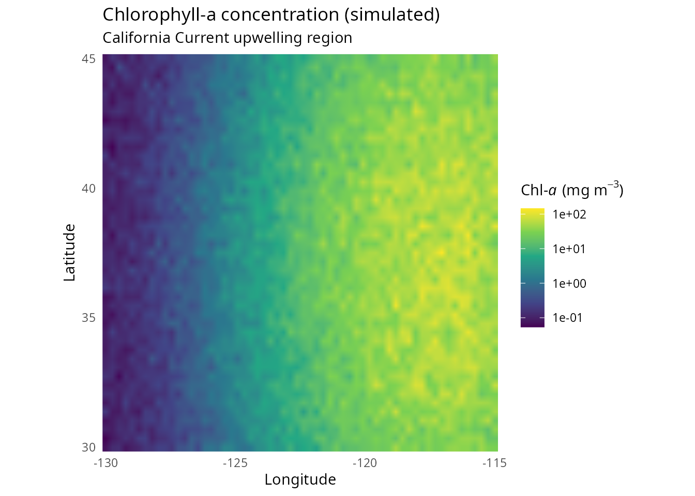
Temperature anomalies
For data with a meaningful zero point (anomalies, deviations), diverging colormaps center attention on departures from normal:
# Simulated SST anomaly (El Niño pattern)
set.seed(789)
anom_grid <- expand.grid(
lon = seq(-180, -80, length.out = 80),
lat = seq(-30, 30, length.out = 40)
)
# El Niño-like pattern: warm in eastern Pacific
anom_grid$anomaly <- with(anom_grid, {
elnino <- 2.5 * exp(-((lon + 120)^2) / 1000) * exp(-(lat^2) / 200)
lanina <- -1.5 * exp(-((lon + 160)^2) / 800) * exp(-(lat^2) / 150)
(elnino + lanina) + rnorm(length(lon), sd = 0.3)
})
ggplot(anom_grid, aes(lon, lat, fill = anomaly)) +
geom_raster(interpolate = TRUE) +
scale_fill_koloro_div("vik", midpoint = 0) +
coord_fixed(expand = FALSE) +
labs(
title = "Sea surface temperature anomaly (simulated)",
subtitle = "El Ni\u00F1o-like pattern using vik diverging colormap",
x = "Longitude",
y = "Latitude",
fill = "Anomaly (\u00B0C)"
) +
theme_minimal() +
theme(
panel.grid = element_blank(),
legend.position = "bottom",
legend.key.width = unit(2, "cm")
)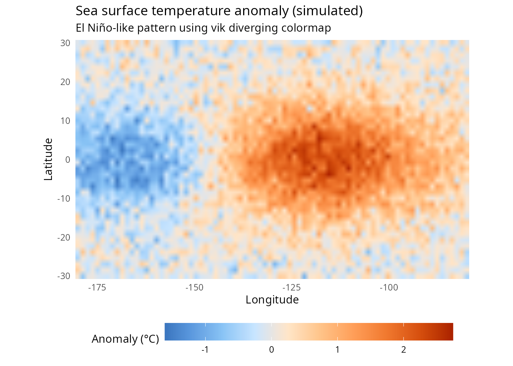
Salinity
Ocean salinity requires careful colormap selection due to its relatively narrow dynamic range (typically 33-37 PSU in the open ocean):
# Simulated salinity field
set.seed(321)
sal_grid <- expand.grid(
lon = seq(-60, -30, length.out = 50),
lat = seq(20, 45, length.out = 40)
)
# Atlantic salinity pattern
sal_grid$salinity <- with(sal_grid, {
base <- 36.5
gyre <- 0.8 * exp(-((lat - 32)^2) / 100) # Subtropical gyre high
freshwater <- -1.2 * exp(-((lon + 45)^2 + (lat - 40)^2) / 50) # River input
base + gyre + freshwater + rnorm(length(lon), sd = 0.1)
})
ggplot(sal_grid, aes(lon, lat, fill = salinity)) +
geom_raster(interpolate = TRUE) +
scale_fill_koloro_c("plasma") +
coord_fixed(expand = FALSE) +
labs(
title = "Sea surface salinity (simulated)",
subtitle = "North Atlantic subtropical gyre",
x = "Longitude",
y = "Latitude",
fill = "Salinity (PSU)"
) +
theme_minimal() +
theme(
panel.grid = element_blank(),
legend.position = "right"
)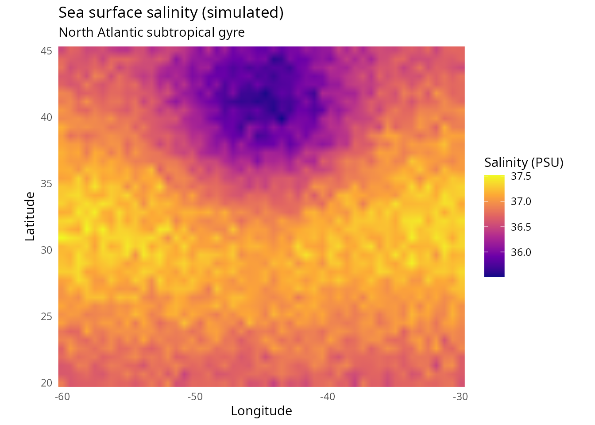
Atmospheric and climate applications
Precipitation anomalies
# Simulated precipitation anomaly
set.seed(654)
precip_grid <- expand.grid(
lon = seq(-125, -65, length.out = 80),
lat = seq(25, 50, length.out = 40)
)
# Dipole pattern (wet west, dry east during La Niña)
precip_grid$precip_anom <- with(precip_grid, {
west <- 2 * exp(-((lon + 115)^2) / 200) * exp(-((lat - 40)^2) / 100)
east <- -1.5 * exp(-((lon + 85)^2) / 150) * exp(-((lat - 35)^2) / 80)
(west + east) * 25 + rnorm(length(lon), sd = 5)
})
ggplot(precip_grid, aes(lon, lat, fill = precip_anom)) +
geom_raster(interpolate = TRUE) +
scale_fill_koloro_div("brown_blue_green", midpoint = 0) +
coord_fixed(expand = FALSE) +
labs(
title = "Precipitation anomaly (simulated)",
subtitle = "La Ni\u00F1a-like pattern over North America",
x = "Longitude",
y = "Latitude",
fill = "Anomaly (mm)"
) +
theme_minimal() +
theme(
panel.grid = element_blank(),
legend.position = "bottom",
legend.key.width = unit(2, "cm")
)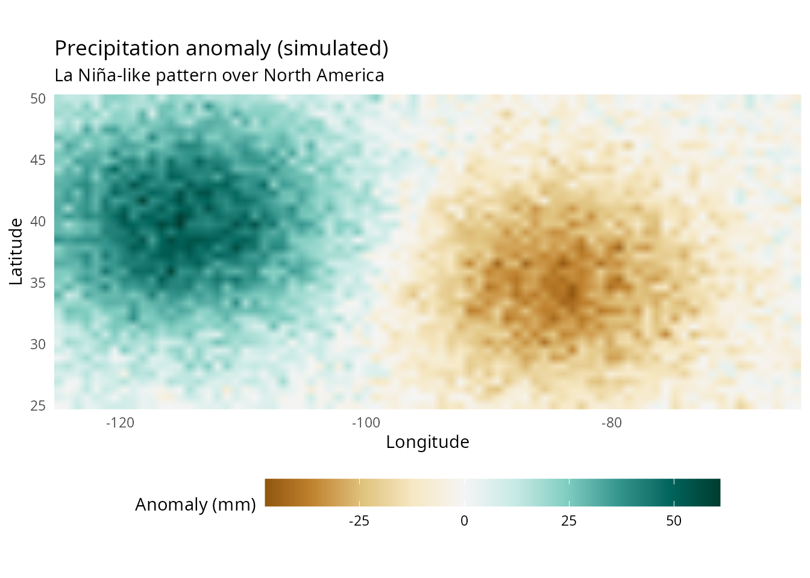
Wind stress curl
Oceanographic forcing by wind stress curl benefits from diverging colormaps to highlight regions of positive (cyclonic) and negative (anticyclonic) curl:
# Simulated wind stress curl
set.seed(987)
curl_grid <- expand.grid(
lon = seq(-180, -120, length.out = 60),
lat = seq(20, 60, length.out = 40)
)
# Typical North Pacific pattern
curl_grid$curl <- with(curl_grid, {
# Positive curl in subpolar region
subpolar <- 1e-7 * exp(-((lat - 50)^2) / 50)
# Negative curl in subtropical region
subtropical <- -0.8e-7 * exp(-((lat - 30)^2) / 40)
(subpolar + subtropical) + rnorm(length(lon), sd = 0.2e-7)
})
ggplot(curl_grid, aes(lon, lat, fill = curl * 1e7)) +
geom_raster(interpolate = TRUE) +
scale_fill_koloro_div("cork", midpoint = 0) +
coord_fixed(expand = FALSE) +
labs(
title = "Wind stress curl (simulated)",
subtitle = "North Pacific gyre system",
x = "Longitude",
y = "Latitude",
fill = expression(paste("Curl (", 10^{-7}, " N ", m^{-3}, ")"))
) +
theme_minimal() +
theme(
panel.grid = element_blank(),
legend.position = "right"
)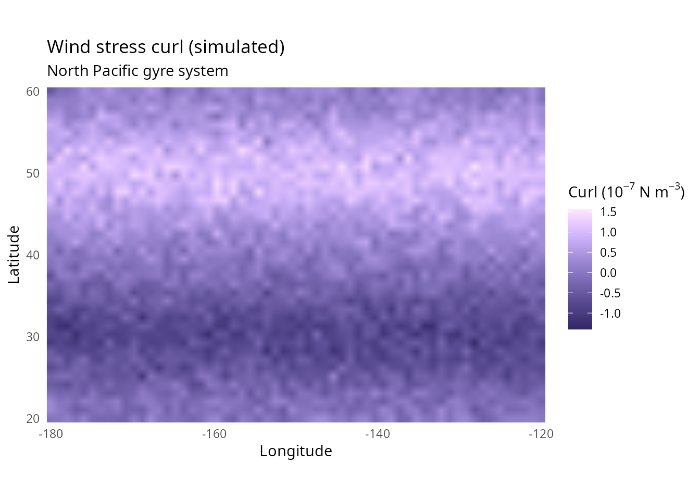
Palette selection guide for oceanography
| Data type | Recommended palette | Alternative |
|---|---|---|
| SST (absolute) | batlow |
viridis, plasma
|
| SST anomaly | vik |
cork, red_yellow_blue
|
| Bathymetry | deep_sea |
ocean, batlowK
|
| Chlorophyll-a | viridis |
plasma, magma
|
| Salinity | plasma |
batlow, cividis
|
| Precipitation anomaly | brown_blue_green |
purple_green |
| Wind/current vectors | viridis |
cividis |
| Mixed layer depth | batlowW |
batlow |
| Sea ice concentration | cool_gray |
cividis |
Best practices for scientific visualization
1. Choose appropriate colormap type
- Sequential: Single-direction data (temperature, depth, concentration)
- Diverging: Data with meaningful center point (anomalies, correlations)
- Qualitative: Categorical data (water masses, regions)
2. Consider your audience
For publications, use palettes validated for colorblind accessibility (Nuñez et al. (2018)):
# cividis is specifically optimized for deuteranopia
plot_palette("cividis")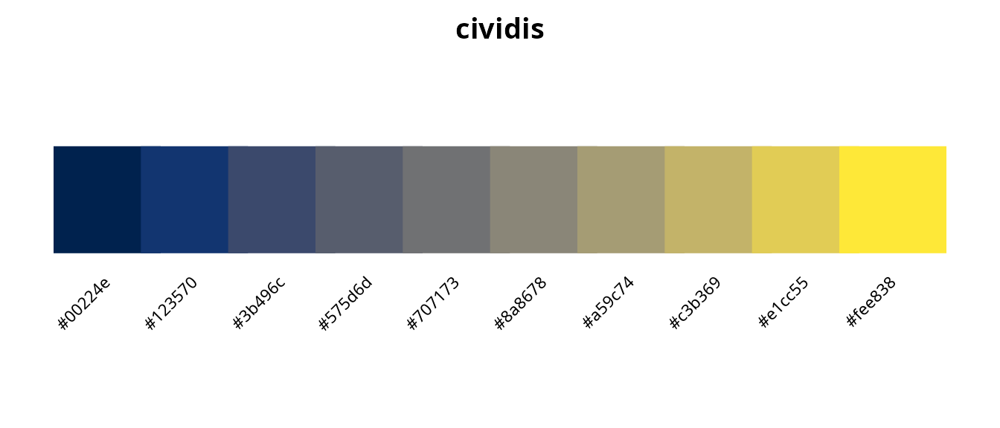
3. Match colormap to data semantics
Intuitive color associations improve comprehension:
- Blues: Ocean depth, cold temperatures
- Warm colors: Heat, high concentrations
- Earth tones: Terrain, sediments
4. Avoid perceptual artifacts
Rainbow colormaps create false boundaries. Compare:
# Same data, different colormaps
test_data <- expand.grid(x = 1:50, y = 1:30)
test_data$z <- with(test_data, sin(x/10) * cos(y/10) + x/50)
p1 <- ggplot(test_data, aes(x, y, fill = z)) +
geom_raster() +
scale_fill_koloro_c("turbo") + # Rainbow-like
labs(title = "Turbo (rainbow-like)") +
theme_void() +
theme(legend.position = "none")
p2 <- ggplot(test_data, aes(x, y, fill = z)) +
geom_raster() +
scale_fill_koloro_c("viridis") + # Perceptually uniform
labs(title = "Viridis (perceptually uniform)") +
theme_void() +
theme(legend.position = "none")
gridExtra::grid.arrange(p1, p2, ncol = 2)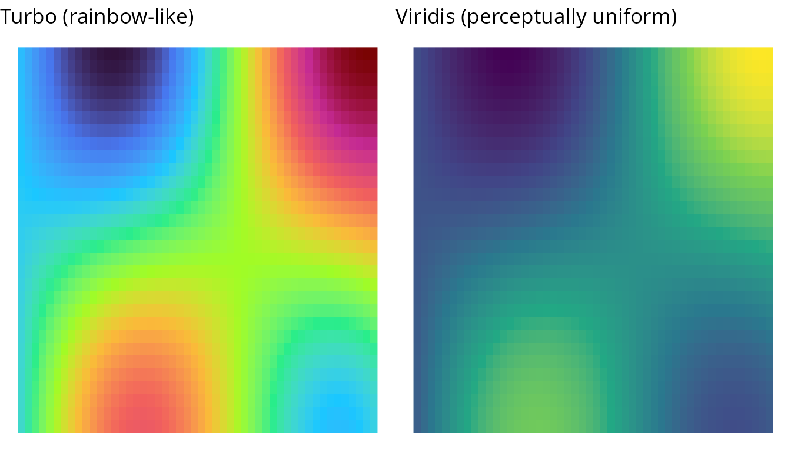
Complete scientific palette inventory
sci_palettes <- list_palettes(category = "scientific")
knitr::kable(sci_palettes, caption = "Scientific visualization palettes in koloRo")| palette_name | category | n_colors |
|---|---|---|
| scientific | 10 | |
| viridis | scientific | 6 |
| magma | scientific | 6 |
| plasma | scientific | 6 |
| inferno | scientific | 10 |
| cividis | scientific | 10 |
| turbo | scientific | 9 |
| batlow | scientific | 10 |
| batlowW | scientific | 9 |
| batlowK | scientific | 10 |
| cork | scientific | 9 |
| vik | scientific | 12 |
| broc | scientific | 12 |
| spectral | scientific | 11 |
| rdylbu | scientific | 11 |
| coolwarm | scientific | 8 |
| twilight | scientific | 12 |
| parula | scientific | 9 |
References
Borland, D., & Taylor, R.M. (2007). Rainbow color map (still) considered harmful. IEEE Computer Graphics and Applications, 27(2), 14-17. doi:10.1109/MCG.2007.46
Light, A., & Bartlein, P.J. (2004). The end of the rainbow? Color schemes for improved data graphics. Eos, Transactions AGU, 85(40), 385-391. doi:10.1029/2004EO400002
Crameri, F., Shephard, G.E., & Heron, P.J. (2020). The misuse of colour in science communication. Nature Communications, 11, 5444. doi:10.1038/s41467-020-19160-7
Crameri, F. (2018). Scientific colour maps. Zenodo. doi:10.5281/zenodo.1243862
van der Walt, S., & Smith, N. (2015). A better default colormap for Matplotlib. Proceedings of SciPy 2015. https://bids.github.io/colormap/
Nuñez, J.R., Anderton, C.R., & Renslow, R.S. (2018). Optimizing colormaps with consideration for color vision deficiency. PLOS ONE, 13(7), e0199239. doi:10.1371/journal.pone.0199239
Thyng, K.M., et al. (2016). True colors of oceanography: Guidelines for effective and accurate colormap selection. Oceanography, 29(3), 9-13. doi:10.5670/oceanog.2016.66
Wong, B. (2011). Points of view: Color blindness. Nature Methods, 8(6), 441. doi:10.1038/nmeth.1618
Zeileis, A., et al. (2020). colorspace: A toolbox for manipulating and assessing colors and palettes. Journal of Statistical Software, 96(1), 1-49. doi:10.18637/jss.v096.i01
Session info
sessionInfo()
#> R version 4.6.0 (2026-04-24)
#> Platform: x86_64-pc-linux-gnu
#> Running under: Ubuntu 24.04.4 LTS
#>
#> Matrix products: default
#> BLAS: /usr/lib/x86_64-linux-gnu/openblas-pthread/libblas.so.3
#> LAPACK: /usr/lib/x86_64-linux-gnu/openblas-pthread/libopenblasp-r0.3.26.so; LAPACK version 3.12.0
#>
#> locale:
#> [1] LC_CTYPE=es_ES.UTF-8 LC_NUMERIC=C
#> [3] LC_TIME=es_ES.UTF-8 LC_COLLATE=es_ES.UTF-8
#> [5] LC_MONETARY=es_ES.UTF-8 LC_MESSAGES=es_ES.UTF-8
#> [7] LC_PAPER=es_ES.UTF-8 LC_NAME=C
#> [9] LC_ADDRESS=C LC_TELEPHONE=C
#> [11] LC_MEASUREMENT=es_ES.UTF-8 LC_IDENTIFICATION=C
#>
#> time zone: Europe/Madrid
#> tzcode source: system (glibc)
#>
#> attached base packages:
#> [1] stats graphics grDevices utils datasets methods base
#>
#> other attached packages:
#> [1] ggplot2_4.0.3 koloRo_0.1.2
#>
#> loaded via a namespace (and not attached):
#> [1] gtable_0.3.6 jsonlite_2.0.0 dplyr_1.2.1 compiler_4.6.0
#> [5] tidyselect_1.2.1 gridExtra_2.3 jquerylib_0.1.4 systemfonts_1.3.2
#> [9] scales_1.4.0 textshaping_1.0.5 yaml_2.3.12 fastmap_1.2.0
#> [13] R6_2.6.1 labeling_0.4.3 generics_0.1.4 knitr_1.51
#> [17] htmlwidgets_1.6.4 tibble_3.3.1 desc_1.4.3 bslib_0.10.0
#> [21] pillar_1.11.1 RColorBrewer_1.1-3 rlang_1.2.0 cachem_1.1.0
#> [25] xfun_0.57 fs_2.1.0 sass_0.4.10 S7_0.2.2
#> [29] otel_0.2.0 cli_3.6.6 withr_3.0.2 pkgdown_2.2.0
#> [33] magrittr_2.0.5 digest_0.6.39 grid_4.6.0 rstudioapi_0.18.0
#> [37] lifecycle_1.0.5 vctrs_0.7.3 evaluate_1.0.5 glue_1.8.1
#> [41] farver_2.1.2 ragg_1.5.2 rmarkdown_2.31 tools_4.6.0
#> [45] pkgconfig_2.0.3 htmltools_0.5.9